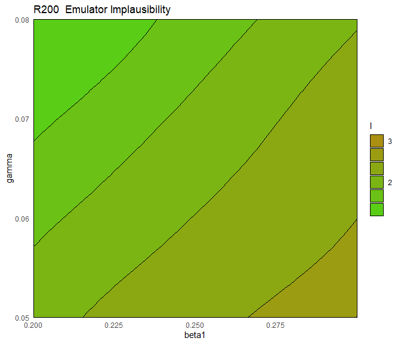

5 Implausibility
In this section we focus on implausibility and its role in the history matching process. Once emulators are built, we want to use them to systematically explore the input space. For any chosen parameter set, the emulator provides us with an approximation of the corresponding model output. This value is what we need to assess the implausibility of the parameter set in question.
For a given model output and a given target, the implausibility measures the difference between the emulator output and the target, taking into account all sources of uncertainty. For a parameter set \(x\), the general form for the implausibility \(I(x)\) is
\[I(x) = \frac{|f(x)-z|}{\sqrt{V_0 + V_c(x)+V_s+V_m}},\]
where \(f(x)\) is the emulator output, \(z\) the target, and the terms in the denominator refer to various forms of uncertainty. In particular
- \(V_0\) is the variance associated with the observation uncertainty (i.e. uncertainty in estimates from observed data);
- \(V_c(x)\) refers to the uncertainty one introduces when using the emulator output instead of the model output itself. Note that this term depends on \(x\), since the emulator is more/less certain about its predictions based on how close/far \(x\) is from training parameter sets;
- \(V_s\) is the ensemble variability and represents the stochastic nature of the model (this term is not present in this tutorial, since the model is deterministic);
- \(V_m\) is the model discrepancy, accounting for possible mismatches between the model and reality.
Since in this case study we want to emulate our model, without reference to a real-life analogue, the model represents the reality perfectly. For this reason we have \(V_m=0\). Similarly we have \(V_s=0\), since our model is deterministic. The observation uncertainty \(V_0\) is represented by the ‘sigma’ values in the targets list, while \(V_c\) is the emulator variance, which we discussed in the previous section.
A very large value of \(I(x)\) means that we can be confident that the parameter set \(x\) does not provide a good match to the observed data, even factoring in the additional uncertainty that comes with the use of emulators. When \(I(x)\) is small, it could mean that the emulator output is very close to the model output or it could mean that the uncertainty in the denominator of \(I(x)\) is large. In the former case, the emulator retains the parameter set, since it is likely to give a good fit to the observation for that output. In the latter case, the emulator does not have enough information to rule the parameter set out and therefore keeps it to explore it further in the next wave.
An important aspect to consider is the choice of cut-off for the implausibility measure. A rule of thumb follows Pukelsheim’s \(3\sigma\) rule, a very general result which states that for any continuous unimodal distribution \(95\%\) of the probability lies within \(3\) sigma of the mean, regardless of asymmetry (or skewness etc). Following this rule, we set the implausibility threshold to be \(3\): this means that a parameter \(x\) is classified as non-implausible only if its implausibility is below \(3\).
For a given emulator, we can plot the implausibility through the function emulator_plot by setting plot_type='imp'. Note that we also set cb=TRUE to ensure that the produced plots are colour blind friendly:
emulator_plot(ems_wave1$R200, plot_type = 'imp',
targets = targets, params = c('beta1', 'gamma'), cb=TRUE)
This is a 2D slice through the input space: for a chosen pair \((\bar\beta_1,\bar\gamma)\), the plot shows the implausibility of the parameter set having \(\beta_1=\bar \beta_1\), \(\gamma=\bar \gamma\) and all other parameters set to their mid-range value. Parameter sets with implausibility more than \(3\) are highly unlikely to give a good fit and will be discarded when forming the parameters sets for the next wave.
Given multiple emulators, we can visualise the implausibility of several emulators at once:
emulator_plot(ems_wave1, plot_type = 'imp',
targets = targets, params = c('beta1', 'gamma'), cb=TRUE)This plot is useful to get an overall idea of which emulators have higher/lower implausibility, but how do we measure overall implausibility? We want a single measure for the implausibility at a given parameter set, but for each emulator we obtain an individual value for \(I\). The simplest way to combine them is to consider maximum implausibility at each parameter set: \[I_M(x) = \max_{i=1,\dots,N}I_{i}(x),\] where \(I_i(x)\) is the implausibility at \(x\) coming from the \(i\)th emulator. Note that Pukelsheim’s rule applies for each emulator separately, but when we combine several emulators’ implausibilities together a threshold of \(3\) might be overly restrictive. For this reason, for large collections of emulators, it may be useful to replace the maximum implausibility with the second- or third-maximum implausibility. This also provides robustness to the failure of one or two of the emulators.
emulator_plot and produce a variety of implausibility plots. Here are a few suggestions: set plot_type to ‘imp’ to get implausibility plots or to ‘nimp’ to display the maximum implausibility plot; use the argument nth to obtain the second- or third- maximum implausibility plot; select a subset of all targets to pass to emulator_plot; change the value of the argument fixed_vals to decide where to slice the parameters that are not shown in the plots.